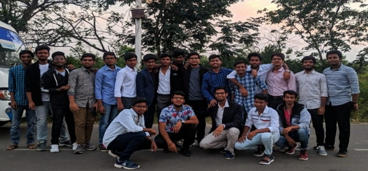

<style>
	.cover_photo {
		height: 90vh;
		min-height: 450px;
		background-image: url('./assets/images/index_page/cover.webp');
		background-size: cover;
		background-position: center;
		margin-bottom: 20px;
		background-repeat: no-repeat;
	}

	@media only screen and (max-width: 600px) {
		.cover_photo {
			background-image: url('./mobile-cover.jpeg');
		}
	}

	blink {
		animation: blinker 3s linear infinite;
		color: blue;
		font-size: larger;
	}

	.bar_content {
		color: white;
		font-size: 24px;
		display: block;
		padding: 40px;
		width: 100%;
	}

	.bar_content a {
		color: orangered;
		text-decoration: none;
	}

	@keyframes blinker {
		50% {
			opacity: 0;
		}
	}
</style>

<!-- banner part start-->
<header class="cover_photo">
	<blink
		direction="left"
		behavior="scroll"
		class="bar_content text-center"
		>Faculty Recruitment is open. <a href="/careers"> Click here</a> for more details.
	</blink>
	<div class="container h-100">
		<div class="row h-100 align-items-center">
			<div class="col-12 text-center">
				<div class="home-landing-text">
					<h1>
						Indian Institute of Information Technology<br />
						Raichur
					</h1>
				</div>
			</div>
		</div>
	</div>
</header>

<section class="section_padding">
	<div class="container">
		<h3 class="text-center">
			<b
				>IIT Hyderabad is pleased to announce the Official handover of the IIIT Raichur on
				1st December 2022.
			</b>
			<br />
			<br />
		</h3>
		<div class="row">
			<iframe
				class="col-lg-6 pb-4"
				width="560"
				height="315"
				src="https://www.youtube.com/embed/2j_5z85LvII?controls=0"
				title="YouTube video player"
				frameborder="0"
				allow="accelerometer; autoplay; clipboard-write; encrypted-media; gyroscope; picture-in-picture"
				allowfullscreen></iframe>
			<h4 class="col-lg-6">
				<br />
				<br />
				Prof B S Murty, Director IITH & Mentor Director, IIITR and Prof Harish Kumar
				Sardana, Director, IIITR, exchanged the handover document on occasion.
				<br />
				<br />
				The coordination Team from IIT Hyderabad also witnessed the occasion.
			</h4>
		</div>
	</div>
</section>

<section class="section_padding">
	<div
		class="container-fluid"
		style="text-align: center">
		<div class="row">
			<div class="col-lg-12 text-center">
				<h2>Latest Updates</h2>
				<hr style="margin-left: auto; border: 2px solid blue; width: 50px" />
			</div>

			{% assign count = 0 %} {% assign update = site.categories['update'] %} {% for post in
			update %} {% if count == 3 %} {% break %} {% endif %}

			<div class="col-lg-4">
				<div class="index-news-cards">
					
					<div class="index-news-cards-content">
						<h3>{{ post.title }}</h3>
						<h5 class="text-muted">{{post.date | date: "%d %b %Y"}}<br /></h5>
					</div>
					<h4>
						<a
							style="color: blue; font-weight: 700"
							href="{{ post.url | absolute_url }}">
							More
						</a>
					</h4>
					<br /><br />
				</div>
			</div>

			{% assign count = count | plus: 1 %} {% endfor %}
		</div>
	</div>
</section>
<section class="section_padding">
	<div class="container">
		<div class="row">
			<div class="col-lg-6">
				<div class="home-more-cards hover-reveal">
					<h3>Student Life</h3>
					
					<h5><br />The pioneering batch.<br /><br /></h5>
					<a
						class="btn btn-light btn-xl js-scroll-trigger shadow"
						href="https://students.iiitr.ac.in/">
						<h4>More</h4>
					</a>
				</div>
			</div>
			<div class="col-lg-6">
				<div class="home-more-cards hover-reveal">
					<h3>Faculty Recruitment</h3>
					
					<h5>
						<br />The recruitment process for both teaching and non teaching staff is
						going on under the mentor institute IIT Hyderabad.
					</h5>
					<a
						class="btn btn-light btn-xl js-scroll-trigger shadow"
						href="/careers">
						<h4>More</h4>
					</a>
				</div>
			</div>
		</div>
	</div>
</section>
